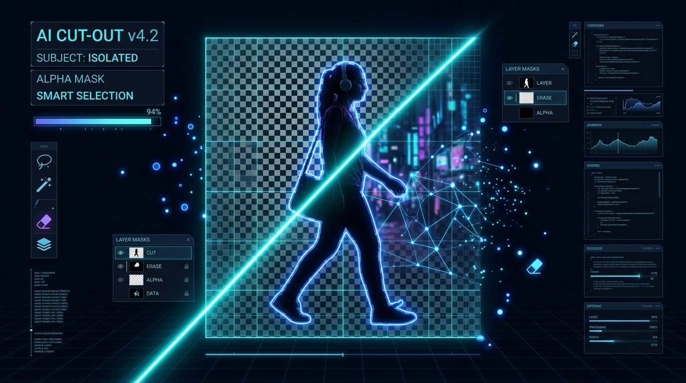

TripGenius AI Planner
A full-stack AI-driven trip planner built with Next.js, TypeScript, Tailwind CSS, PostgreSQL, and Clerk authentication, orchestrated via OpenRouter APIs.
B.Tech CSE (AIML) student crafting scalable AI solutions and high-performance web experiences. Exploring human-centric machine intelligence.
I am an Oracle Certified Agentic AI Foundations Associate and a B.Tech CSE (AIML) student at the intersection of logic and creativity. My development philosophy is rooted in clean architecture and scalability—I don't just write code that works; I build systems that last.
I believe that Artificial Intelligence should be accessible, local-first, and human-centric. With hands-on experience engineering production-grade backend microservices and orchestrating LLMs via OpenRouter APIs, I focus on creating efficient, high-performance solutions that solve real-world problems with elegance.
Python, TensorFlow, Sentence-Transformers, OpenRouter APIs
Next.js, TypeScript, React, Tailwind CSS
Django, Flask, Go, REST APIs
PostgreSQL, MySQL, SQLite, Vector Databases
Ollama, MCP Servers, Semantic Search, Anomaly Detection
Docker Desktop, Git, CI/CD, Clerk Auth

A full-stack AI-driven trip planner built with Next.js, TypeScript, Tailwind CSS, PostgreSQL, and Clerk authentication, orchestrated via OpenRouter APIs.

A next-generation, high-concurrency media extraction engine powered by Go and Python. Features hardware-adaptive resolution scaling, anti-bot spoofing, and a studio-grade FFmpeg rendering pipeline.
"The Windows 12 simulation with local AI integration demonstrates exceptional full-stack engineering—combining OS-level concepts, WebGL, and LLM orchestration in a single browser experience."
"A high-concurrency media extraction engine with hardware-adaptive resolution scaling and anti-bot spoofing—production-grade Go/Python systems engineering."

Ready to start a project or just want to chat about AI? Feel free to reach out.